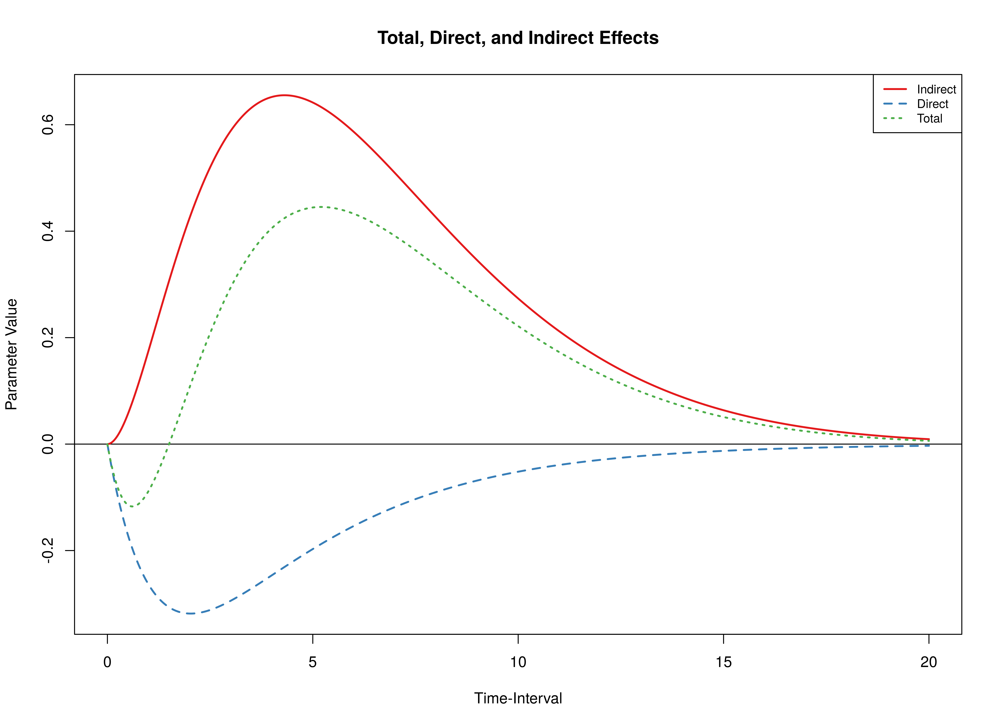
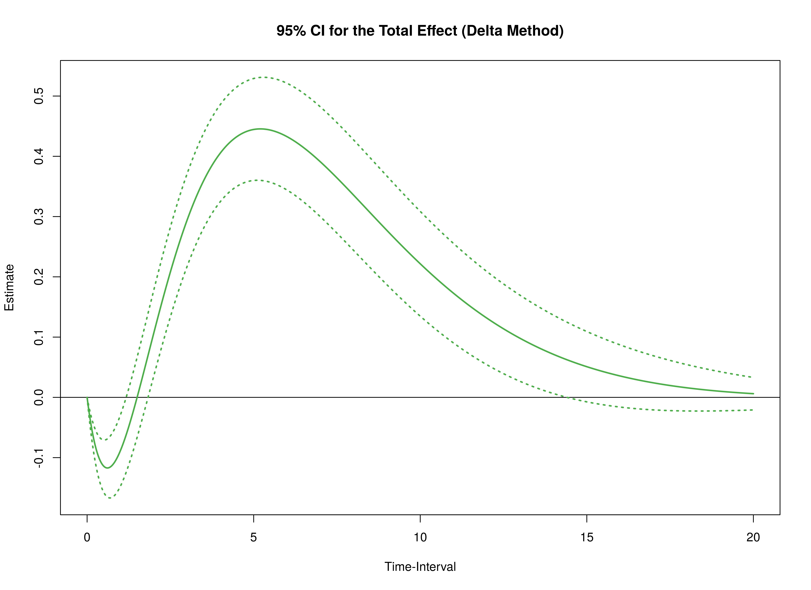
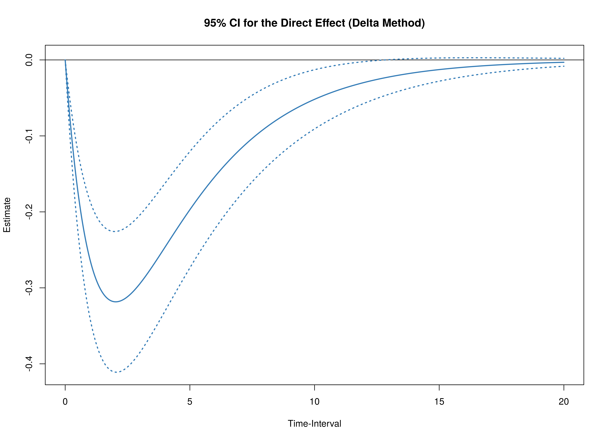
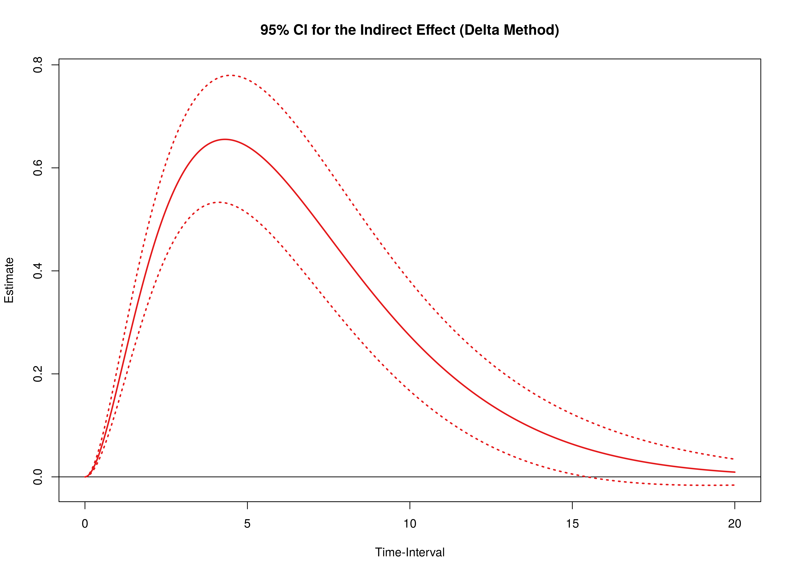

Continuous Time Mediation - Delta Method
Ivan Jacob Agaloos Pesigan
2024-03-28
Source:vignettes/delta.Rmd
delta.RmdThe drift matrix and the corresponding sampling variance-covariance
matrix of the fitted OU model is available in the data object
deboeck2015phi. See this link for
more details on how the model was fitted.
data("deboeck2015phi", package = "manCTMed")Using Results from the dynr Package
phi <- deboeck2015phi$dynr$phi
vcov_phi_vec <- deboeck2015phi$dynr$vcov
phi
#> x m y
#> x -0.3088312 0.00420865 -0.02871960
#> m 0.7249138 -0.48403875 0.05098498
#> y -0.4457214 0.81299042 -0.76341607
vcov_phi_vec
#> phi_11 phi_21 phi_31 phi_12 phi_22
#> phi_11 0.0024442345 -0.0013017934 0.0009445281 -0.0013550539 0.0007272379
#> phi_21 -0.0013017934 0.0040392244 -0.0023513958 0.0008019652 -0.0023088592
#> phi_31 0.0009445281 -0.0023513958 0.0051607554 -0.0006242932 0.0014966782
#> phi_12 -0.0013550539 0.0008019652 -0.0006242932 0.0018691182 -0.0010165455
#> phi_22 0.0007272379 -0.0023088592 0.0014966782 -0.0010165455 0.0031216042
#> phi_32 -0.0005332031 0.0013620562 -0.0030457053 0.0007491447 -0.0018573820
#> phi_13 0.0006011448 -0.0004079467 0.0003449904 -0.0011315787 0.0006720194
#> phi_23 -0.0003303167 0.0010716729 -0.0007928437 0.0006097282 -0.0019289915
#> phi_33 0.0002476040 -0.0006500441 0.0014776961 -0.0004481269 0.0011397004
#> phi_32 phi_13 phi_23 phi_33
#> phi_11 -0.0005332031 0.0006011448 -0.0003303167 0.0002476040
#> phi_21 0.0013620562 -0.0004079467 0.0010716729 -0.0006500441
#> phi_31 -0.0030457053 0.0003449904 -0.0007928437 0.0014776961
#> phi_12 0.0007491447 -0.0011315787 0.0006097282 -0.0004481269
#> phi_22 -0.0018573820 0.0006720194 -0.0019289915 0.0011397004
#> phi_32 0.0040308373 -0.0005239966 0.0012520189 -0.0025418926
#> phi_13 -0.0005239966 0.0017050998 -0.0009065543 0.0006567237
#> phi_23 0.0012520189 -0.0009065543 0.0028102383 -0.0016279725
#> phi_33 -0.0025418926 0.0006567237 -0.0016279725 0.0035739591Note: The input argument
phimatrix is required to have column and rownames as they are used to trace the path of the independent variable column (from = "x") to the dependent variable row (to = "y") through mediator variables (med = "m"). The argumentvcov_phi_vecdoes not require names.
Plot the Effects as a Function of the Time-Interval
med <- Med(
phi = phi,
delta_t = seq(from = 0, to = 20, length.out = 1000),
from = "x",
to = "y",
med = "m"
)
plot(med)
Delta Method for Total, Direct, and Indirect Effects for a Range of Time-Intervals
The delta method confidence intervals of the total, direct, and
indirect effects from \(X\) to \(Y\) through \(M\) at a time-intervals of 1 is calculated
using the DeltaMed() function.
delta <- DeltaMed(
phi = phi,
vcov_phi_vec = vcov_phi_vec,
delta_t = 1,
from = "x",
to = "y",
med = "m"
)The confidence intervals for a range of time-intervals (0 to 20) can
also be calculated as follows. If the length of delta_t is
long, using multiple cores by specifying the number of cores to use
ncores can make the calculations run faster. The
summary function can be used to summarize the results as a
data frame. The plot function can be used to summarize the
results graphically.
delta <- DeltaMed(
phi = phi,
vcov_phi_vec = vcov_phi_vec,
delta_t = seq(from = 0, to = 20, length.out = 1000),
from = "x",
to = "y",
med = "m",
ncores = parallel::detectCores()
)
head(summary(delta))
#> effect interval est se z p
#> 1 total 2.225074e-308 -9.917631e-309 0.000000e+00 -Inf 0.000000e+00
#> 2 direct 2.225074e-308 -9.917631e-309 0.000000e+00 -Inf 0.000000e+00
#> 3 indirect 2.225074e-308 0.000000e+00 0.000000e+00 NaN NaN
#> 4 total 2.002002e-02 -8.711266e-03 1.408647e-03 -6.184139 6.244252e-10
#> 5 direct 2.002002e-02 -8.828126e-03 1.419897e-03 -6.217441 5.053270e-10
#> 6 indirect 2.002002e-02 1.168597e-04 1.576828e-05 7.411061 1.252932e-13
#> 2.5% 97.5%
#> 1 -9.917631e-309 -9.917631e-309
#> 2 -9.917631e-309 -9.917631e-309
#> 3 0.000000e+00 0.000000e+00
#> 4 -1.147216e-02 -5.950369e-03
#> 5 -1.161107e-02 -6.045179e-03
#> 6 8.595442e-05 1.477649e-04
plot(delta)

